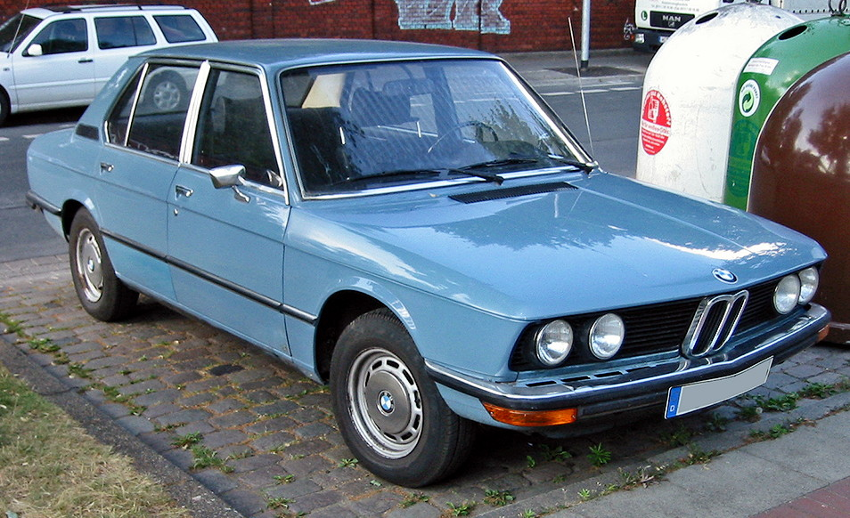

History...
The Otto Flugmaschinenfabrik was founded in 1910 by Gustav Otto in the Kingdom of Bavaria, which was a state of the German Empire. The firm was reorganized on 7 March 1916 into Bayerische Flugzeugwerke AG. This company was then renamed to Bayerische Motoren Werke (BMW) in 1922... However, the name BMW dates back to 1913, when a company to use the name was founded by Karl Rapp initially as Rapp Motorenwerke. The name and Rapp Motorenwerke's engine-production assets were transferred to Bayerische Flugzeugwerke in 1922, who adopted the name the same year. BMW's first product was produced for fighter aircraft of the Luftstreitkräfte. It was a straight-six aircraft engine called the BMW IIIa, designed in the spring of 1917 by engineer Max Friz. Following the end of World War I, BMW remained in business by producing motorcycle engines, agricultural equipment, household items, and railway brakes. The company produced its first motorcycle, the BMW R 32, in 1923. BMW became an automobile manufacturer in 1928 when it purchased Fahrzeugfabrik Eisenach, which, at the time, built the Austin 7 under licence from Dixi. The first car sold as a BMW was a rebadged BMW Dixi called the BMW 3/15, following BMW's acquisition of the car manufacturer Automobilwerk Eisenach. Throughout the 1930s, BMW expanded its range into sports cars and larger luxury cars. Aircraft engines, motorcycles, and automobiles would be BMW's main products until World War II. During the war, BMW concentrated on the BMW 801 aircraft engine using as many as 40,000 slave laborers. These consisted primarily of prisoners from Nazi concentration camps, most prominently Dachau. Motorcycles remained as a side-line and automobile manufacture ceased altogether. BMW's factories were heavily bombed during the war and its remaining West German facilities were banned from producing motor vehicles or aircraft after the war. Again, the company survived by making pots, pans, and bicycles. In 1948, BMW restarted motorcycle production. BMW resumed car production in Bavaria in 1952 with the BMW 501 luxury saloon. The range of cars was expanded in 1955, through the production of the cheaper Isetta microcar under licence. Slow sales of luxury cars and small profit margins from microcars, meant BMW was in serious financial trouble and in 1959 the company was nearly taken over by rival Daimler-Benz.[citation needed] A large investment in BMW by Herbert Quandt and Harald Quandt resulted in the company surviving as a separate entity. Günther Quandt, was a well-known German industrialist, joined the Nazi party in 1933 and made a fortune arming the German Wehrmacht, manufacturing weapons and batteries. Many of his enterprises were appropriated from Jewish owners under duress with minimal compensation. At least three of his enterprises made extensive use of slave laborers, as many as 50,000 in all. One of his battery factories had its own on-site concentration camp, complete with gallows. Life expectancy for laborers was six months. While Quandt and BMW were not directly connected during the war, funds amassed in the Nazi era by his father allowed Herbert Quandt to buy BMW. The relative success of the small BMW 700 assisted in the company's recovery, allowing them to develop the New Class sedans. 1972 BMW 5 Series (1st generation) The 1962 introduction of the BMW New Class compact sedans was the beginning of BMW's reputation as a leading manufacturer of sport-oriented cars. Throughout the 1960s, BMW expanded its range by adding coupé and luxury sedan models. The BMW 5 Series mid-size sedan range was introduced in 1972, followed by the BMW 3 Series compact sedans in 1975, the BMW 6 Series luxury coupés in 1976 and the BMW 7 Series large luxury sedans in 1978. The BMW M division released its first road car, a mid-engine supercar, in 1978. This was followed by the BMW M5 in 1984 and the BMW M3 in 1986. Also in 1986, BMW introduced its first V12 engine in the 750i luxury sedan. The 1989 BMW Z1 marked BMW's return to making a two-seat roadster, the 1995 BMW Z3 was their first mass-production two-seat roadster, and the 1999 BMW X5 was the company's first entry into the SUV market. The company purchased the Rover Group in 1994, but the takeover was not successful and caused BMW large financial losses. In 2000, BMW sold off most of the Rover brands, retaining only the Mini brand. In 1998, BMW also acquired the rights to the Rolls-Royce brand from Vickers. The first modern mass-produced turbocharged petrol engine was introduced in 2006 (from 1973 to 1975, BMW built 1,672 units of a turbocharged BMW M10 engine for the BMW 02 Series), with most engines switching over to turbocharging over the 2010s. The first hybrid BMW was the 2010 BMW ActiveHybrid 7, and BMW's first mass-production electric car was the BMW i3 city car, which was released in 2013, (from 1968 to 1972, BMW built two battery-electric BMW 1602 Elektro saloons for the 1972 Olympic Games) After many years of establishing a reputation for sporting rear-wheel drive cars, BMW's first front-wheel drive car was the 2014 BMW 2 Series Active Tourer multi-purpose vehicle (MPV). In March 2018, Daimler and BMW merged their mobility services. In August 2019, Oliver Zipse replaced Harald Krüger as the head of the BMW Group.  BMW 5 Series
Motorsport...
The R32 motorcycle, the first BMW motor vehicle, at the BMW Museum in Munich The 2015 BMW R1200RT BMW began production of motorcycle engines and then motorcycles after World War I. Its motorcycle brand is now known as BMW Motorrad. Their first successful motorcycle after the failed... Helios and Flink, was the "R32" in 1923, though production originally began in 1921. This had a "boxer" twin engine, in which a cylinder projects into the air-flow from each side of the machine. Apart from their single-cylinder models (basically to the same pattern), all their motorcycles used this distinctive layout until the early 1980s. Many BMW's are still produced in this layout, which is designated the R Series. The entire BMW Motorcycle production has, since 1969, been located at the company's Berlin-Spandau factory. During the Second World War, BMW produced the BMW R75 motorcycle with a motor-driven sidecar attached, combined with a lockable differential, this made the vehicle very capable off-road. In 1982, came the K Series, shaft drive but water-cooled and with either three or four cylinders mounted in a straight line from front to back. Shortly after, BMW also started making the chain-driven F and G series with single and parallel twin Rotax engines. In the early 1990s, BMW updated the airhead Boxer engine which became known as the oilhead. In 2002, the oilhead engine had two spark plugs per cylinder. In 2004 it added a built-in balance shaft, an increased capacity to 1,170 cc (71 cu in) and enhanced performance to 75 kW (101 hp) for the R1200GS, compared to 63 kW (84 hp) of the previous R1150GS. More powerful variants of the oilhead engines are available in the R1100S and R1200S, producing 73 and 91 kW (98 and 122 hp), respectively. In 2004, BMW introduced the new K1200S Sports Bike which marked a departure for BMW. It had an engine producing 125 kW (168 hp), derived from the company's work with the Williams F1 team, and is lighter than previous K models. Innovations include electronically adjustable front and rear suspension, and a Hossack-type front fork that BMW calls Duolever. BMW introduced anti-lock brakes on production motorcycles starting in the late 1980s. The generation of anti-lock brakes available on the 2006 and later BMW motorcycles paved the way for the introduction of electronic stability control, or anti-skid technology later in the 2007 model year. BMW has been an innovator in motorcycle suspension design, taking up telescopic front suspension long before most other manufacturers. Then they switched to an Earles fork, front suspension by swinging fork (1955 to 1969). Most modern BMWs are truly rear swingarm, single sided at the back (compare with the regular swinging fork usually, and wrongly, called swinging arm). Some BMWs started using yet another trademark front suspension design, the Telelever, in the early 1990s. Like the Earles fork, the Telelever significantly reduces dive under braking. BMW Group, on 31 January 2013, announced that Pierer Industrie AG has bought Husqvarna Motorcycles for an undisclosed amount, which will not be revealed by either party in the future. The company is headed by Stephan Pierer (CEO of KTM). Pierer Industrie AG is 51% owner of KTM and 100% owner of Husqvarna. In September 2018, BMW unveiled a new self-driving motorcycle with BMW Motorrad with a goal of using the technology to help improve road safety. The design of the bike was inspired by the company's BMW R1200 GS model.


{kind=link}
{kind=link}